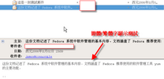

COSA活動記錄簿
留下COSA所辦活動之紀錄
首頁
相簿目錄
::
最新上傳
::
最新留言
::
熱門圖片
::
最高評分
熱門圖片
96 次觀看

96 次觀看
95 次觀看
08 得獎緣由一
95 次觀看
95 次觀看
95 次觀看
95 次觀看
95 次觀看
95 次觀看
95 次觀看
95 次觀看
95 次觀看
752 張圖片，共 63 頁
1
37
38
39
40
41
42
43
44
45
46
63


.jpg "檔案名稱=1 (15).jpg
檔案大小=40KB
圖片尺寸=450x600
加入日期=四月 24, 2007")
.jpg "檔案名稱=1 (19).jpg
檔案大小=79KB
圖片尺寸=800x600
加入日期=四月 24, 2007")
.jpg "檔案名稱=1 (23).jpg
檔案大小=51KB
圖片尺寸=800x600
加入日期=四月 24, 2007")
.jpg "檔案名稱=1 (4).jpg
檔案大小=90KB
圖片尺寸=800x600
加入日期=四月 24, 2007")